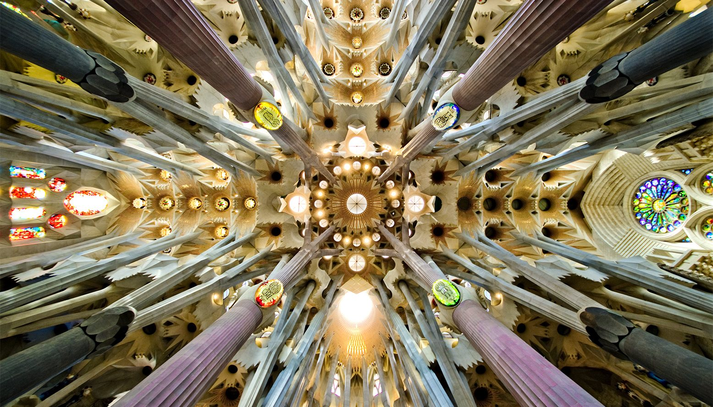

Inspirado na geometria de Gaudí
Matemática
em perspectiva
Estruturas, padrões e ideias que conectam ciência, arte e vida.
ExplorarFeito só de retasO hiperboloide ao lado é uma superfície curva construída apenas com segmentos de reta. Gaudí usou essas formas nas abóbadas e janelas da Sagrada Família.

- Geometrianas formas
- Ideiasem movimento
- Conhecimentocompartilhado
- Curiosidadesempre
Matemática · Ciência · Arte · Vida
Trilhas do
Conhecimento
Caminhos que se conectam — projetos, materiais e ideias de livre acesso para aprender matemática olhando o mundo.
Começar a explorar“Cada ideia é um caminho.
E cada caminho leva a outros.”
01Trilhas
Seis caminhos que se cruzam o tempo todo. Comece por qualquer um.
02Projetos
Ferramentas interativas para a sala de aula — abertas, gratuitas e pensadas para o celular dos alunos.
Triângulo Mestre
Laboratório interativo das relações métricas no triângulo retângulo: arraste, meça e descubra por que h² = m·n.
Abrir o laboratórioOficina de Geometria
Trigonometria, semelhança, Tales e Pitágoras a partir de situações reais — com uma parte digital feita para surpreender.
Mather
Um jogo de plataforma em que o personagem sobe, desce, avança ou volta conforme você responde valores trigonométricos.
03Materiais & Escritos
Uma biblioteca em formação. Tudo o que estiver aqui pode ser usado, adaptado e compartilhado.
Materiais didáticos
Atividades, roteiros e fichas prontos para imprimir ou projetar.
- Atividades investigativas em preparação
- Geoplano: atividades e teoria em preparação
- Roteiros de oficina em preparação
Escritos
Textos e reflexões sobre ensinar e aprender matemática na escola pública.
- Notas de sala de aula em breve
- Erros que ensinam em breve
- Livros e referências em breve
04Sobre
“A curiosidade transforma o olhar.”
Sou Divonei, licenciando em Matemática e educador na rede pública. Este site é o lugar onde reúno o que construo para ensinar: ferramentas interativas, materiais e ideias.
Tudo aqui é de livre acesso. Se algo for útil na sua sala de aula, use à vontade.